| Code | Nhân viên | OT |
|---|
| Tháng | Phòng ban | OT Excel WLB (h) | OT chấm công (h) | Chênh lệch (h) | NV chỉ có ở Excel | NV chỉ có ở chấm công |
|---|
…/interview/?c=ten-ma (tạo khi bấm Tạo ứng viên). Ô trên là địa chỉ gốc dùng để ghép link: có thể đổi sang tên miền riêng / link rút gọn trỏ về trang này. Ứng viên cũ (có tài khoản/mật khẩu) dùng link chung. Việc tạo tài khoản, chấm điểm, xuất kết quả chỉ làm được khi đăng nhập HMD bằng quyền Quản lý / Admin.
| No. | Tên dự án | Project OT Summary | Kế hoạch nhân sự / Staffing | Lý do / Kế hoạch | Duyệt bởi ECM / HODs | Ghi chú |
|---|
| No. | Tên dự án | Project OT Summary | Kế hoạch nhân sự / Staffing | Lý do / Kế hoạch | Duyệt bởi ECM / HODs | Ghi chú |
|---|
Lưu ý: Khi Tải lên (Save), dữ liệu trên Sheet sẽ bị ghi đè bằng dữ liệu hiện tại của bạn. Khi Tải xuống (Load), dữ liệu local sẽ bị thay bằng dữ liệu trên Sheet.
Sau khi đổi, nhớ bấm "💾 Lưu & Đồng bộ lên Sheet" để dùng được ở máy khác.
sendNotifyEmail dùng MailApp.sendEmail() để tự gửi từ tài khoản anhtuan@taikisha-vn.com mà không cần mở email cá nhân.
2. Bấm Tải lên Sheet ở đây để đồng bộ cho mọi người cùng xem
3. Người khác mở app (đã cấu hình cùng URL) → bấm Tải xuống từ Sheet để lấy data mới nhất
4. Nếu bật tự động tải lên, mọi thay đổi (upload, xóa tháng...) sẽ tự sync ngay
1) File chấm công In/Out (như file gốc) — app tự tính OT theo công thức: MAX(0, Tổng giờ đã làm cả kỳ − Tổng giờ tiêu chuẩn cả kỳ) (8h/ngày thường, 4h/thứ 7, 0h/CN). Xem chi tiết ở mục "Công thức tính".
2) File đơn giản: Tên NV · Phòng Ban · Ngày · Giờ OT (đã có sẵn số giờ OT).
Chu kỳ tháng công ty: mỗi "tháng" tính từ ngày 16 đến ngày 15 tháng sau.
Upload theo từng mốc luỹ kế: mỗi lần upload, file chứa dữ liệu từ 16 đến ngày bất kỳ (ví dụ 16-26/04, lần sau 16/04-03/05, lần sau 16/04-10/05...). App lưu OT theo từng ngày cụ thể và ghi nhận mỗi lần upload là 1 "mốc" — vào tab Dashboard có nút chọn xem lại từng mốc, mốc cuối cùng (xa nhất) = báo cáo luỹ kế cả tháng.
Lưu ý: Dữ liệu lưu trong trình duyệt này (localStorage). Dùng nút Xuất PDF hoặc Báo cáo HTML ở mục Báo cáo để backup định kỳ.
Vì sao nên dùng file này thay vì 2 mục ở trên? Cách upload OT (theo chu kỳ lương 16→15) và Off Day (theo tháng dương lịch) riêng biệt trước đây có thể bị lệch ngày giữa 2 nguồn, khiến WLB tính sai. File này có cả OT và Off Day cùng nằm trong 1 file, cùng tính theo tháng dương lịch — đảm bảo luôn khớp đúng.
Sau khi upload, dữ liệu từ file này sẽ được ưu tiên dùng cho mọi tính toán WLB (tháng nào có trong file) — các trang OT/Đi trễ khác không bị ảnh hưởng.
Xuất PDF
Báo cáo 4 mục theo tháng/quý đã chọn ở trên, sẵn sàng để in hoặc chia sẻ qua email.
Báo cáo HTML
Cùng nội dung báo cáo trên, mở trực tiếp trên trình duyệt, dễ chia sẻ link nội bộ.
Biểu đồ so sánh phòng ban / dự án
So sánh OT các phòng ban và dự án HCM-EC theo tháng hoặc quý (dùng tháng/quý chọn ở trên).
Danh sách NV OT
Xuất riêng danh sách nhân viên OT của tháng đã chọn (Excel), xếp Vượt 70h → 45-70h → Bình thường, từ lớn đến nhỏ.
Hướng dẫn nhập liệu PU Delivery
Theo dõi hàng hóa/thiết bị của từng dự án: nhập từ Excel hoặc nhập tay, hệ thống tự tính trạng thái Trễ / Sắp giao / Đã giao.
Mở mục PU Delivery
Bấm PU Delivery ở menu bên trái. Mục này theo dõi hàng hóa/thiết bị của từng dự án: đã đặt chưa, bao giờ về công trường, có trễ không.
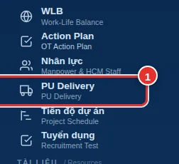
Đọc nhanh tình hình ở phần tổng quan
Phía trên cùng là các ô tổng hợp và biểu đồ.
- 1Các ô số: Tổng hàng hóa · Trễ tiến độ · Sắp giao (≤ 2 ngày) · Thiếu KH đặt hàng · Đã giao. Bấm vào một ô để mở danh sách chi tiết các hàng thuộc nhóm đó.
- 2Biểu đồ cột theo dự án: mỗi màu là một trạng thái giao hàng.
Ví dụ bấm ô Trễ tiến độ, hệ thống liệt kê các hàng đã quá ngày dự kiến giao mà chưa về site:
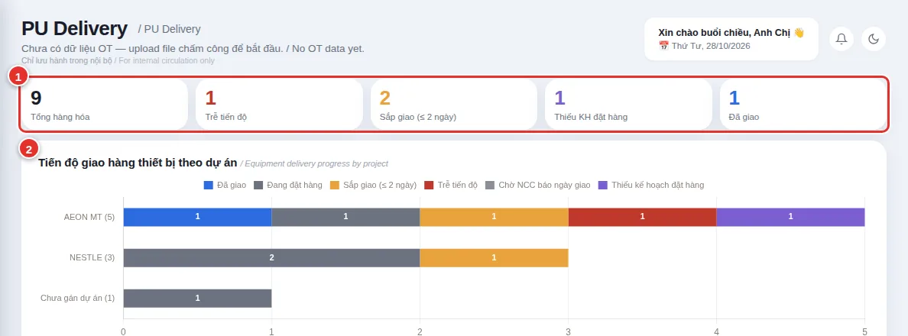
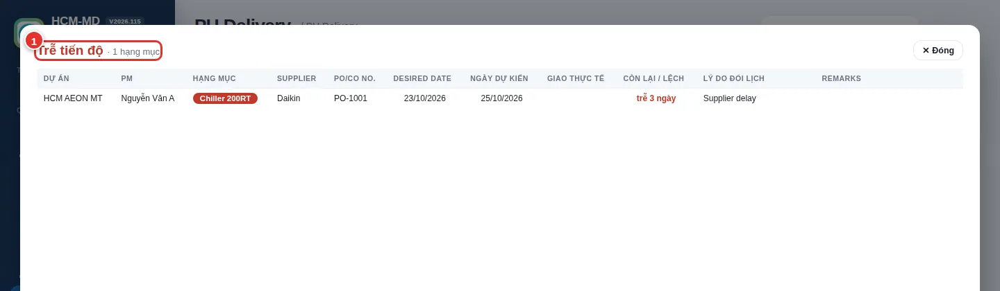
Làm quen thanh công cụ
Ngay dưới biểu đồ là thanh công cụ.
- 1＋ Thêm dự án: tạo dự án riêng của PU Delivery (dự án Action Plan tự có sẵn).
- 2Lọc theo dự án và trạng thái.
- 3Ô tìm kiếm: gõ tên hàng, nhà cung cấp, số PO hoặc tên PM.
- 4Nhập Excel: nạp file Equipment Order Record (mọi người đều dùng được).
- 5Xuất Excel: tải danh sách ra đúng mẫu file gốc.
Nhập dữ liệu từ file Excel
- Bấm Nhập Excel → chọn file Equipment Order Record (.xlsx).
- Hệ thống đọc từng dòng và tự xếp vào đúng dự án theo tên dự án.
- Xem lại danh sách. Dòng nào chưa khớp tên dự án sẽ nằm ở khung vàng (bước 5).
Gán dự án cho các hàng "Chưa gán dự án"
Nếu tên dự án trong Excel khác tên trong Action Plan, các hàng đó hiện trong khung ⚠️ Chưa gán dự án Action Plan.
- 1Chọn đúng dự án ở ô "Gán vào dự án…". Cả nhóm hàng chuyển sang dự án đó.
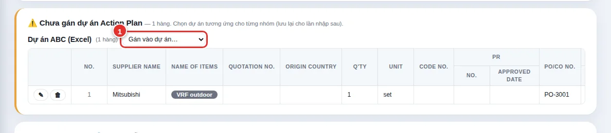
Mở dự án để xem danh sách hàng
Mỗi dự án là một thẻ. Bấm vào tên dự án để mở/đóng bảng hàng hóa.
- 1Dòng tên dự án: PM, Job No., số hàng hóa và số hàng theo từng trạng thái.
- 2Tên hàng có màu = trạng thái hiện tại (đỏ: trễ · cam: sắp giao · xám: đang đặt hàng · tím: thiếu kế hoạch đặt hàng · xanh dương: đã giao).
- 3✎ sửa hàng. 🗑 xoá (chỉ Quản lý/Admin).
- 4＋ Thêm hàng vào dự án này. ✎ Dự án sửa tên PM.
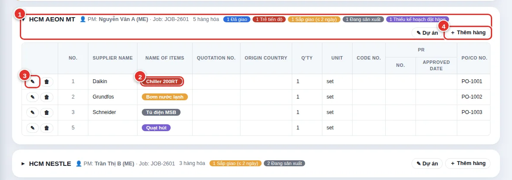
Thêm hoặc sửa một hàng hóa
Bấm ＋ Thêm hàng hoặc ✎ ở dòng cần sửa. Chỉ cần nhập các ô bạn có thông tin, không bắt buộc đủ hết.
- 1Dự án (Action Plan).
- 2Nhà cung cấp và Tên hàng.
- 3Order Date – Plan: ngày dự kiến đặt hàng.
- 4Desired date: ngày công trường cần hàng.
- 5Estimate – As contract: ngày NCC cam kết giao theo hợp đồng. Khi đổi lịch, nhập tiếp 1st / 2nd / 3rd Change; hệ thống lấy ngày mới nhất làm ngày dự kiến giao.
- 6Lý do đổi lịch (ví dụ: Supplier delay, PM request).
- 7Actual date on site: nhập khi hàng đã về công trường → hàng chuyển sang Đã giao.
- 8Trạng thái tự tính, không phải nhập tay; đổi ngày là trạng thái đổi theo.
Bấm 💾 Lưu để lưu. Mọi người cùng thấy thay đổi.
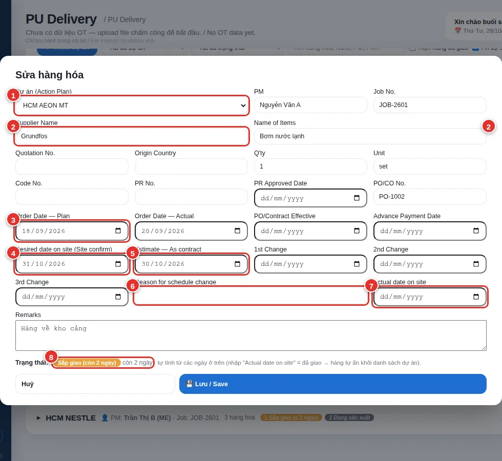
Cách hệ thống tính trạng thái
| Trạng thái | Khi nào |
|---|---|
| Đã giao | Có Actual date on site. |
| Trễ tiến độ | Hôm nay đã quá ngày dự kiến giao mà chưa giao. |
| Sắp giao | Còn từ 0 đến 2 ngày nữa là tới ngày dự kiến giao. |
| Đang đặt hàng | Còn trên 2 ngày. |
| Chờ NCC báo ngày giao | Chưa có ngày dự kiến nhưng đã có ngày đặt hàng (Plan). |
| Thiếu kế hoạch đặt hàng | Chưa có ngày dự kiến và chưa có ngày đặt hàng. |
Hướng dẫn nhập liệu Tiến độ dự án
Lập tiến độ thi công theo kiểu MS Project (có thể upload file .mpp), cập nhật % hoàn thành và xem biểu đồ Gantt.
Mở mục Tiến độ dự án
Bấm Tiến độ dự án ở menu bên trái. Mục này lập tiến độ thi công theo kiểu MS Project (công việc nhiều cấp, thời gian, công việc đi trước) và vẽ biểu đồ Gantt. Ai cũng xem và nhập được.
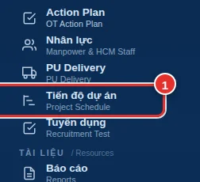
Màn hình chính: các dự án đã lập tiến độ
- Hàng ô số trên cùng: số dự án, đúng tiến độ, rủi ro, chậm trễ, công việc trễ hạn, hàng PU trễ.
- 1＋ Lập tiến độ cho dự án: tạo tiến độ mới.
- 2Ô tìm kiếm dự án; hai ô chọn lọc theo tình trạng và sắp xếp.
- 3Thẻ dự án: ngày bắt đầu/kết thúc, các giai đoạn, % thực tế so với kế hoạch, số ngày còn lại. Bấm vào thẻ để mở dự án trong tab mới.
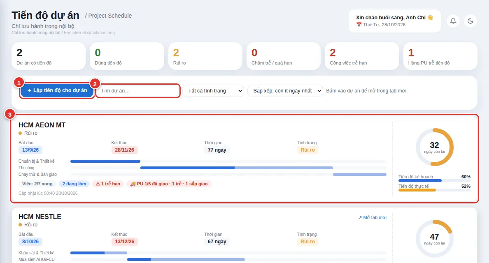
Lập tiến độ cho một dự án mới
- Bấm ＋ Lập tiến độ cho dự án.
- Chọn dự án trong danh sách (lấy từ Action Plan/PU Delivery) hoặc chọn ＋ Dự án khác để nhập tên.
- Chọn ngày khởi công rồi bấm Tạo để bắt đầu với tiến độ trống và tự thêm công việc.
- Đã có sẵn file tiến độ MS Project? Dùng nút 📂 Upload MPP (xem bước 4) để tạo nhanh, khỏi nhập tay.
- 1Chọn dự án.
- 2Ngày khởi công/bắt đầu.
- 3📂 Upload MPP: tạo tiến độ từ file có sẵn.
- 4Bấm Tạo.
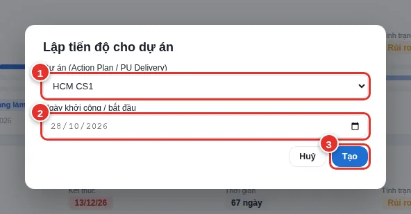
Tạo nhanh tiến độ từ file MS Project (.mpp)
Nếu đã lập tiến độ bằng MS Project, không cần gõ lại từng dòng.
- Bấm ＋ Lập tiến độ cho dự án.
- Bấm 📂 Upload MPP và chọn file .mpp trên máy. Cũng chọn được file .xml (MS Project → Save As → XML) hoặc Excel theo file mẫu.
- Khi hiện dòng xanh ✅ … — N công việc là đã đọc xong. Ngày khởi công tự lấy theo file.
- Chọn dự án (hoặc nhập tên dự án mới) rồi bấm Tạo.
- 1Chọn dự án (hoặc ＋ Dự án khác).
- 2Tên dự án nếu chọn dự án khác.
- 3Ngày khởi công, tự điền từ file (sửa được).
- 4Kết quả đọc file: tên file và số công việc.
- 5Bấm Tạo.
Hệ thống giữ nguyên cấp bậc công việc, thời lượng, ngày bắt đầu, % hoàn thành và quan hệ đi trước (FS/SS/FF/SF + độ trễ), rồi vẽ ngay biểu đồ Gantt:
- 1⬆ Nhập MPP trong trang dự án: nạp file khác vào dự án đang mở (thay toàn bộ tiến độ hiện tại, có hỏi xác nhận).
- 2Biểu đồ Gantt đã dựng từ file.
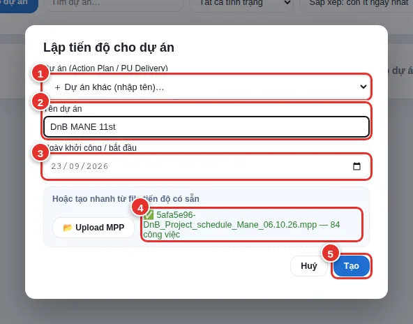
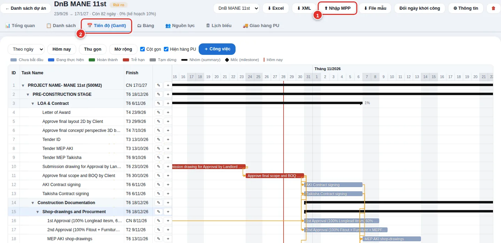
Trang của dự án: các cách xem
Sau khi tạo (hoặc bấm vào thẻ), bạn vào trang của dự án.
- 1← Danh sách dự án: quay lại màn hình chính.
- 2Ô chọn dự án: chuyển nhanh sang dự án khác. Các nút Excel / XML xuất tiến độ (XML mở được bằng MS Project); Nhập MPP, File mẫu để nạp tiến độ từ file.
- 3Các thẻ xem: Tổng quan · Danh sách · Gantt · Bảng · Nguồn lực · Lịch biểu · Giao hàng PU.
- 4＋ Công việc: thêm một công việc mới.
- 5✎: mở chi tiết công việc để sửa.
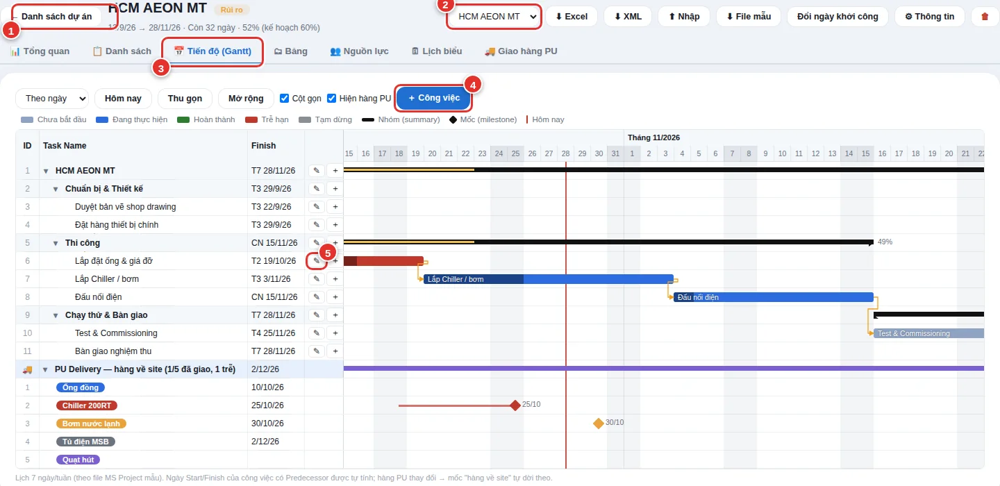
Nhập công việc nhanh ở tab Danh sách
Tab Danh sách là chỗ nhập liệu thuận tiện nhất.
- 1＋ Công việc: thêm công việc, đặt tên và thời gian.
- 2Gõ thẳng % hoàn thành vào ô trên dòng công việc. Cột Trạng thái và thanh tiến độ tự đổi.
- 3✎ sửa chi tiết công việc.
- 4＋ thêm một công việc con ngay bên dưới.
- 5Lọc theo trạng thái; hoặc gõ tên công việc/người thực hiện để tìm.
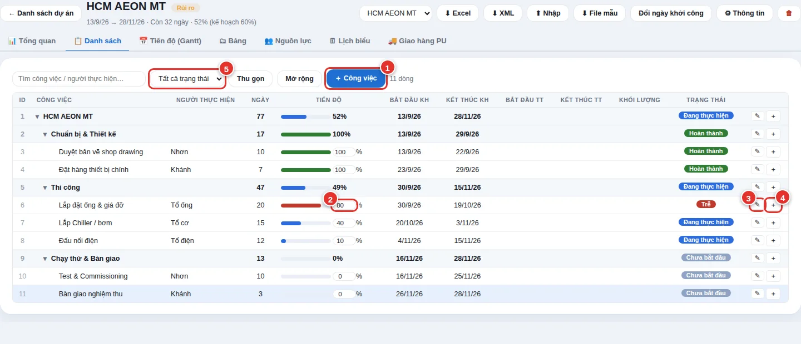
Sửa chi tiết một công việc
Bấm ✎ ở công việc cần sửa.
- 1Tên công việc.
- 2Người thực hiện: nhiều người cách nhau dấu phẩy.
- 3Predecessors (việc đi trước): gõ số ID, ví dụ
4hoặc5, 6SS+3d. Mặc định là FS (xong việc trước mới bắt đầu); có thể dùng SS/FF/SF và độ trễ. - 4Duration: số ngày thực hiện. Đặt 0 để tạo một mốc (milestone).
- 5Ngày bắt đầu kế hoạch: nếu đã có Predecessor thì hệ thống tự tính, không nhập được.
- 6Thanh trượt % hoàn thành.
- 7Ghi chú cập nhật: lý do chậm, tiến độ thực tế… Lưu lại trong lịch sử cập nhật.
- 8Tích 🚚 Liên kết PU Delivery để ngày của mốc này lấy theo ngày hàng cuối cùng về site.
- 9Bấm Lưu.
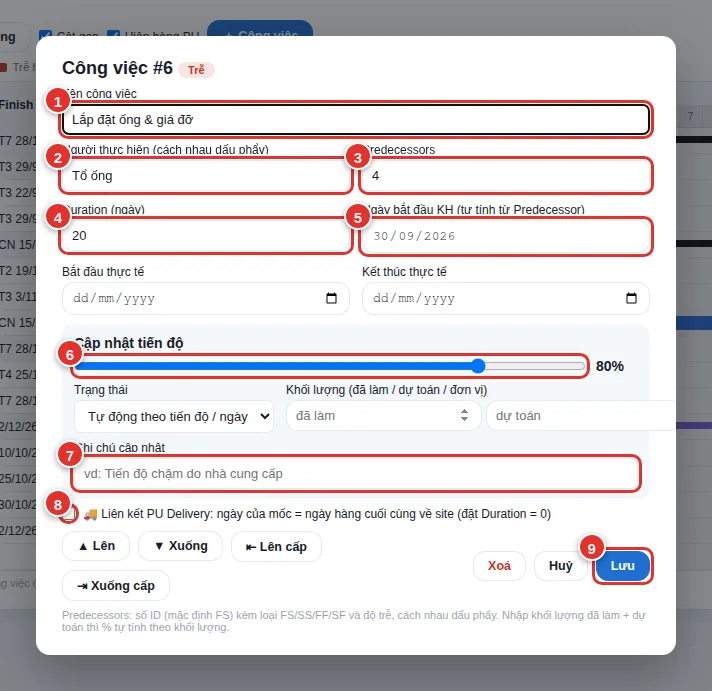
Xem hàng PU Delivery của dự án
Thẻ 🚚 Giao hàng PU liệt kê hàng hóa của dự án lấy trực tiếp từ mục PU Delivery: ngày As contract, ngày dự kiến về site, ngày thực tế, số ngày trễ và trạng thái.
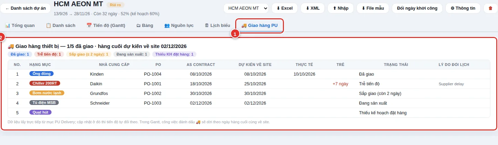
Hướng dẫn Tuyển dụng
Tạo bài thi online cho ứng viên bằng link riêng, ứng viên làm bài và nộp, người tuyển dụng chấm điểm.
Mở mục Tuyển dụng
Bấm Tuyển dụng ở menu bên trái. Đây là nơi tạo bài thi online cho ứng viên và chấm điểm.
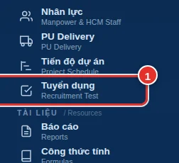
Vào cổng quản trị
Bấm thẻ Quản trị viên. Nếu bạn đã đăng nhập HMD bằng tài khoản có quyền, hệ thống vào thẳng danh sách ứng viên, không hỏi mật khẩu thêm.
- 1Thẻ Quản trị viên.
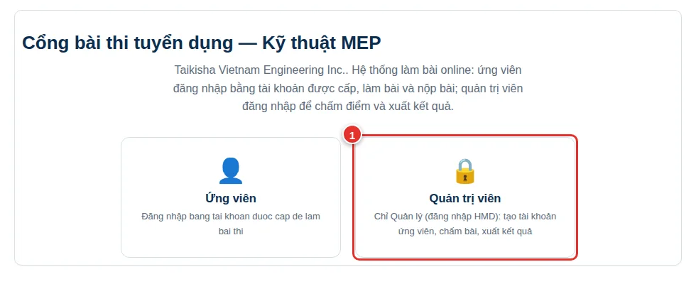
Danh sách ứng viên
Bảng này liệt kê mọi ứng viên: tài khoản, họ tên, vị trí, đề thi, trạng thái và thời gian nộp.
- 1＋ Tạo ứng viên mới.
- 2Làm mới: tải lại danh sách (để thấy ai vừa nộp bài).
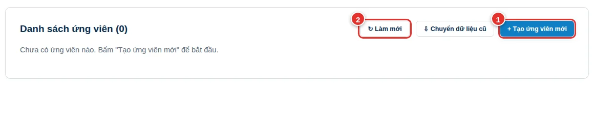
Tạo ứng viên và link riêng
Bấm ＋ Tạo ứng viên mới, điền thông tin rồi bấm Tạo tài khoản.
- 1Mã/tên gọi: để bạn nhận biết, viết liền không dấu (ví dụ
nguyenvana). - 2Link có hiệu lực (ngày): mặc định 7 ngày. Hết hạn mà ứng viên chưa vào làm thì link không dùng được.
- 3Họ và tên ứng viên.
- 4Vị trí ứng tuyển.
- 5Đề thi: chọn Đề 1–4, hoặc bấm 🎲 Ngẫu nhiên để hệ thống chọn.
- 6Bấm Tạo tài khoản.
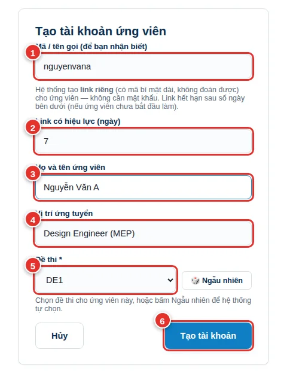
Gửi link cho ứng viên
Sau khi tạo, ứng viên xuất hiện trong danh sách.
- 1Cột Trạng thái: Chưa bắt đầu → Đang làm bài → Đã nộp bài.
- 2Xem: xem bài làm (đổi thành Chấm bài sau khi ứng viên nộp).
- 3Link: sao chép link riêng của ứng viên. Dán gửi qua Zalo/Email.
- 4Rút gọn: tạo link ngắn (qua dịch vụ is.gd) và sao chép. Nếu dịch vụ không phản hồi, hệ thống vẫn sao chép link gốc để bạn dùng.
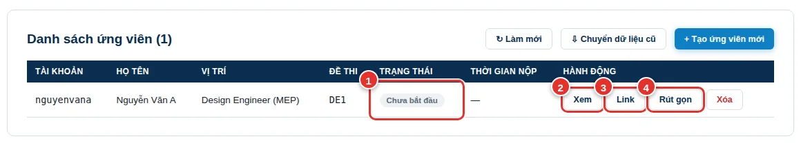
Ứng viên làm bài
Ứng viên bấm link là vào thẳng bài thi, không cần đăng nhập hay tạo tài khoản.
- 1Ứng viên điền họ tên và ngày sinh (bắt buộc), sau đó làm bài.
- 2Thanh phía trên: % hoàn thành, trạng thái Đang lưu… (bài tự động lưu) và đồng hồ đếm ngược 60 phút, tính từ lúc ứng viên bắt đầu.
Làm xong, ứng viên kéo xuống cuối trang và bấm Nộp bài →.
- 1Nút Nộp bài.
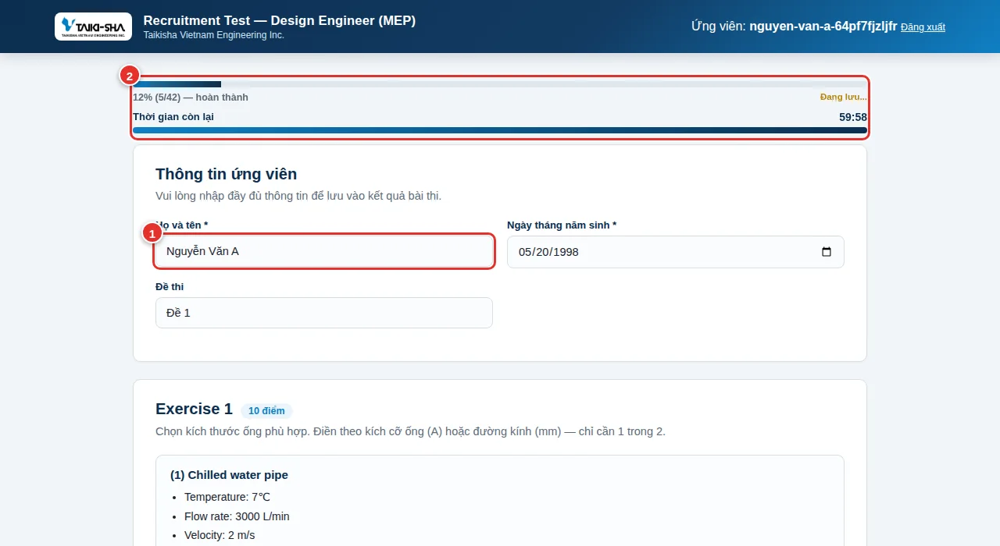
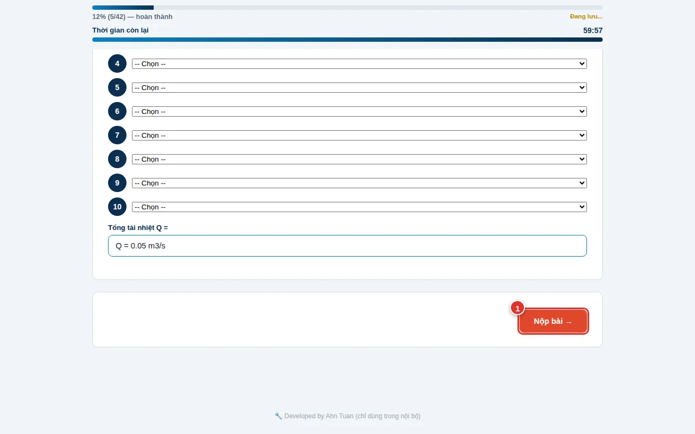
Sau khi nộp: link hết hiệu lực
Ứng viên thấy màn hình xác nhận đã nộp bài.
Từ đó, mở lại link chỉ hiện thông báo "Link đã được sử dụng": không xem lại hay sửa được bài. Hệ thống cũng không lưu gì trên máy/trình duyệt của ứng viên.
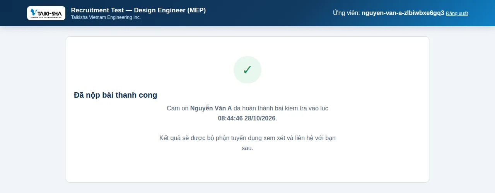
Chấm bài
Khi ứng viên nộp xong, danh sách đổi trạng thái thành Đã nộp bài và nút đổi thành Chấm bài.
Bấm Chấm bài để xem bài:
- 1Tổng điểm trên thang 70, tự cập nhật khi bạn sửa điểm.
- 2Điểm từng câu. Exercise 1, 2, 3 được chấm tự động theo đáp án chuẩn; bạn có thể sửa lại nếu cần.
- 3Nhãn KHỚP / KHÁC: câu trả lời có trùng đáp án chuẩn hay không, kèm đáp án màu xanh để đối chiếu.
- 4← Quay lại danh sách.
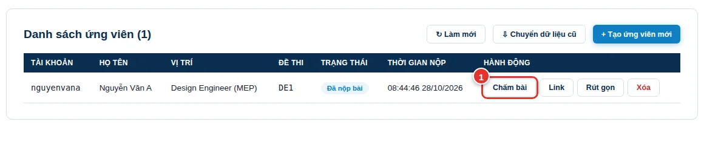
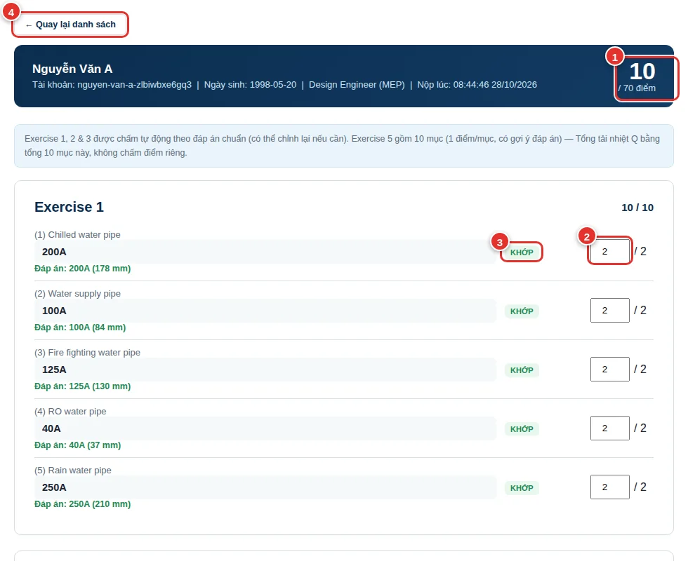
Công thức tổng quát (tính theo cả kỳ, không phải "vượt ngưỡng mỗi ngày" như trước):
OT = MAX(0, Tổng giờ ĐÃ LÀM trong kỳ − Tổng giờ TIÊU CHUẨN trong kỳ)
Mỗi ngày chỉ đóng góp 2 con số: giờ đã làm và giờ tiêu chuẩn. OT chỉ thật sự "lộ ra" ở phần chênh lệch cộng dồn của cả kỳ — không giới hạn theo từng ngày riêng lẻ.
1. Giờ đã làm mỗi ngày (tự động trừ giờ nghỉ trưa 12h-13h, có tính cả giờ đến sớm):
Giờ làm = max(0, min(12h, Giờ ra) − Giờ vào) + max(0, Giờ ra − max(13h, Giờ vào))
Giờ vào/ra được làm tròn 2 bước trước khi tính: làm tròn LÊN 15 phút, rồi làm tròn XUỐNG 30 phút. Ví dụ 7:32 → 7:45 → 7:30.
Thiếu dữ liệu chấm công: thiếu 1 trong 2 (thiếu giờ vào HOẶC thiếu giờ ra) → ngày đó đóng góp 0 giờ làm (không có giả định 8:00/17:00 nào — khớp đúng file gốc công ty đã kiểm chứng), nhưng vẫn tính đủ giờ tiêu chuẩn của ngày đó (xem bên dưới) — nên ngày thiếu chấm công sẽ làm giảm OT cộng dồn của kỳ.
2. Giờ tiêu chuẩn mỗi ngày (luôn cộng dồn dù có đi làm hay không):
| Loại ngày | Giờ tiêu chuẩn |
|---|---|
| Thứ 2 – Thứ 6 | 8h |
| Thứ 7 | 4h |
| Chủ nhật | 0h |
⚠️ Khác với file Excel gốc: file gốc không giảm giờ tiêu chuẩn cho ngày lễ (khiến người nghỉ đúng ngày lễ bị kéo tụt OT tháng đó một cách bất hợp lý). App đã sửa: ngày lễ/Tết được miễn giờ tiêu chuẩn (0h) — người nghỉ đúng ngày lễ sẽ không bị trừ quota ngày đó. Người vẫn đi làm đúng ngày lễ thì không đổi gì — giờ làm hôm đó vẫn được tính 100% là OT như file gốc.
OT sau 22h (Night OT): phần giờ làm sau 22:00 (đã làm tròn), hiển thị ở cột "OT sau 22h" trong Danh sách NV OT. Ở bảng danh sách, cột "OT bình thường" = Tổng OT − OT sau 22h, đảm bảo OT bình thường + OT sau 22h luôn = Tổng OT luỹ kế (nếu quota tháng đó đã "hấp thụ" hết OT thực làm, phần khuya cũng không còn được công nhận riêng — khớp đúng công thức Tổng OT chính thức). Trang Tổng quan OT có thêm biểu đồ "Tần suất OT sau 22h" — đếm số ngày mỗi NV có OT khuya trong kỳ đang xem, giúp phát hiện ai làm khuya thường xuyên (không chỉ 1-2 lần ngẫu nhiên).
Theo tháng (chu kỳ 16→15):
Tổng OT luỹ kế = MAX(0, tổng giờ làm − tổng giờ tiêu chuẩn) tính từ ngày 16 đầu chu kỳ đến ngày được chọn (Week 1/2/3/4).
Quy định OT: không vượt quá 70h/tháng. Trong mức 70h là bình thường/hợp lệ; vượt quá 70h mới thật sự là vượt mức cần xử lý.
| Mức OT luỹ kế | Trạng thái | Ý nghĩa |
|---|---|---|
| ≤ 70h | Bình thường | Trong mức quy định |
| > 70h | Vượt mức | Vượt trần 70h — cần xử lý/xin duyệt |
% Giới hạn = Tổng OT luỹ kế ÷ 70h × 100%. Dùng chung công thức này ở mọi tab: Tổng quan OT, OT phòng ban — chỉ khác cách lấy mốc thời gian (theo tuần hoặc theo cả tháng).
Mục "OT phòng ban" và "So sánh OT" (Tuần / Tháng / Quý):
Các biểu đồ/bảng ở đây hiển thị Tổng OT (cộng dồn toàn bộ giờ OT của các NV trong phòng ban/công ty), không phải số trung bình:
| Tab | Cách tính |
|---|---|
| OT phòng ban | Tổng OT luỹ kế của từng phòng ban, theo tuần đang chọn hoặc cả tháng |
| So sánh — Tuần | Tổng OT phát sinh riêng trong từng tuần (không cộng dồn từ tuần trước) của từng phòng ban |
| So sánh — Tháng | Tổng OT cả tháng của từng phòng ban |
| So sánh — Quý | Tổng OT của 3 tháng trong quý, cộng lại theo từng phòng ban |
Ý nghĩa: Tổng OT cho biết phòng ban/công ty đang "tiêu tốn" bao nhiêu giờ OT thực tế trong kỳ — phù hợp để theo dõi chi phí OT, áp lực nhân sự theo quy mô phòng ban.
Ghi chú (chưa áp dụng): Nếu muốn xem theo trung bình (Tổng OT ÷ số NV trong phòng ban), số liệu sẽ cho biết mức OT bình quân mỗi người đang gánh — phù hợp để so sánh áp lực giữa các phòng ban có quy mô nhân sự khác nhau (vì phòng 50 người luôn có Tổng OT lớn hơn phòng 5 người, dù mỗi người làm OT ít hơn). Hiện bản này tạm bỏ chỉ số trung bình, chỉ hiển thị Tổng — có thể bổ sung lại nếu cần.
Trang Tổng quan OT có thêm biểu đồ đường "Xu hướng Tổng OT theo phòng ban" — thể hiện tổng giờ OT phát sinh riêng mỗi tuần (không cộng dồn) của từng phòng ban, giúp thấy rõ tuần nào tăng/giảm.
Tên nhân viên trên mọi biểu đồ trong toàn app hiển thị theo dạng "Mã NV - Tên" (ví dụ: NV0123 - Nguyễn Văn A) để dễ tra cứu, tránh nhầm lẫn giữa các NV trùng tên.
Mỗi ngày (có 5 phút ân hạn):
Số phút trễ = max(0, Giờ vào − 8:05)
Vào trước hoặc đúng 8:05 sáng → không tính trễ (khoảng 8:00-8:05 là thời gian ân hạn). Vào sau 8:05 mới bắt đầu tính phút trễ.
Dữ liệu lấy tự động từ file chấm công In/Out đã upload ở mục OT (không cần upload riêng) — chỉ tính cho 6 phòng ban được phép theo dõi đi trễ: S-AD, S-AZ, S-PD, S-PU, S-QC, S-ED.
Chia 2 mốc:
| Mốc | Điều kiện | Ý nghĩa |
|---|---|---|
| Mốc 1 | < 15 phút | Đi trễ nhẹ — phổ biến nhất (NV thường chỉ trễ 5–10p) |
| Mốc 2 | ≥ 30 phút | Cần xin phép quản lý / evident — tô đỏ + icon nhấp nháy |
Khoảng 15–29 phút không thuộc mốc nào (ít gặp), chỉ được cộng vào Tổng số lần / Tổng phút chung — không hiển thị thành cột riêng. Số lần và tổng phút được tính riêng cho từng mốc, sau đó mới cộng lại thành Tổng.
Bảng chi tiết đi trễ hiển thị theo kiểu liệt kê: mỗi NV 1 dòng, cột "Ngày đi trễ" ghi CHÍNH XÁC những ngày NV đó đi trễ kèm giờ vào thực tế (vd "28/06, 8:03"), không hiển thị cả lịch tháng. Ngày trễ ≥30 phút được tô đỏ đậm để dễ nhận biết. Cột "Tổng lượt"/"Tổng phút" đặt sau cột ngày đi trễ. Áp dụng cho cả tab Theo tháng và Theo quý (tab Quý gộp dữ liệu 3 tháng, ghi rõ tháng nào khi hover vào từng ngày).
Các biểu đồ tổng hợp (số lần/tổng phút theo phòng ban) vẫn chia theo 2 mốc Mốc 1 (<15p) / Mốc 2 (≥30p) để dễ so sánh trực quan giữa các phòng ban — riêng bảng chi tiết từng NV thì không cần chia mốc nữa vì đã thấy rõ từng ngày cụ thể.
Biểu đồ "Top NV đi trễ nhiều nhất" ưu tiên hiển thị Mốc 1 (<15p) làm phần chính của cột (vì đây là tình trạng phổ biến nhất), phần Mốc 2 xếp chồng phía trên bằng màu đỏ để dễ nhận biết các trường hợp cần xin phép.
Mục Đi trễ có 2 tab: Theo tháng (chi tiết từng tháng đang chọn) và Theo Quý (tổng hợp 3 tháng/quý theo từng phòng ban, 2 mốc) — tương tự cách xem theo Tuần/Tháng/Quý ở mục So sánh OT.
WLB = (Ngày nghỉ (off) tích luỹ ÷ Giờ OT tích luỹ) × 100%
Tỷ lệ % càng cao nghĩa là số ngày nghỉ tương xứng với giờ OT đã làm — cân bằng tốt. Tỷ lệ % càng thấp (nghỉ ít so với OT nhiều) là dấu hiệu mất cân bằng.
| Tỷ lệ % | Kết quả |
|---|---|
| Q1–Q3 (T1–T9): > 10% | Đạt |
| Q1–Q3 (T1–T9): ≤ 10% | Không đạt |
| Q4 (T10–T12): > 15% | Đạt |
| Q4 (T10–T12): ≤ 15% | Không đạt |
Theo tháng: tính trực tiếp bằng dữ liệu Off Day + OT của đúng tháng đang chọn.
Theo quý: cộng dồn 3 tháng của quý lịch, không chồng lấp: Q1 = T1–T3, Q2 = T4–T6, Q3 = T7–T9, Q4 = T10–T12. Ngưỡng: Q1–Q3 > 10% là Đạt; Q4 > 15% là Đạt.
Dữ liệu Off Day cần được upload riêng ở mục Cài đặt → Upload file Off Day (khác với file chấm công OT) — WLB chỉ tính được cho tháng nào đã có cả 2 nguồn dữ liệu (OT + Off Day).
Trạng thái của mỗi hàng hóa được tự tính từ các cột ngày (không nhập tay):
Ngày dự kiến giao = 3rd Change → 2nd Change → 1st Change → As contract (lấy ngày mới nhất có nhập)
Còn lại = Ngày dự kiến giao − Hôm nay
| Trạng thái | Điều kiện (xét từ trên xuống) |
|---|---|
| Đã giao | Có "Actual date on Site". Hàng đã giao tự ẩn khỏi danh sách dự án (coi như hoàn tất); vẫn tính trong số liệu, biểu đồ và xem được ở ô "Đã giao" hoặc tick "Hiện hàng đã giao". |
| Chờ NCC báo ngày giao | Chưa có ngày dự kiến, nhưng đã có Order Date (Plan). |
| Thiếu kế hoạch đặt hàng | Chưa có ngày dự kiến, chưa có Order Date (Plan), và không có NCC kèm Desired date còn hiệu lực. |
| Trễ tiến độ | Đã quá Ngày dự kiến giao (hôm nay > ngày dự kiến) mà chưa có "Actual date on Site". |
| Sắp giao (≤ 2 ngày) | Còn lại từ 0 đến 2 ngày nữa là tới ngày dự kiến giao. |
| Đang đặt hàng | Còn lại trên 2 ngày. |
Hướng dẫn sử dụng:
- Dự án lấy từ Action Plan, mỗi dự án có PM và danh sách hàng hóa. Bấm tên dự án để mở/đóng; nút ✎ Dự án sửa tên PM; ＋ Thêm dự án tạo dự án riêng.
- Nhập Excel (Admin/Quản lý): nạp file Equipment Order Record, thay thế danh sách trước đó. Tên dự án trong Excel chưa khớp Action Plan nằm ở mục vàng "Chưa gán dự án" — chọn dự án tương ứng một lần, lần sau tự nhớ.
- ＋ Thêm hàng / ✎ Sửa: nhập đủ các cột như Excel; ô Trạng thái trong form tự cập nhật ngay khi đổi ngày. Muốn đánh dấu đã giao: nhập "Actual date on Site".
- Xuất Excel ra đúng mẫu file gốc (tiêu đề 2 tầng gộp ô, dòng "Project Name" và "Job No." theo từng dự án, cột ngày dạng dd/mm/yyyy, thêm cột Status) — file xuất ra có thể nhập lại bằng chính nút Nhập Excel.
- Tên hàng hiển thị dạng nhãn màu theo trạng thái. Bấm các ô tổng hợp phía trên (Trễ tiến độ, Sắp giao…) để xem chi tiết từng hạng mục; bấm một dòng để sửa.
- Biểu đồ "Tiến độ giao hàng thiết bị theo dự án" cho thấy số hàng theo từng trạng thái của mỗi dự án.
- Trang chính: mỗi dự án một thẻ như trang quản lý đa dự án: ngày bắt đầu/kết thúc, thời gian, tình trạng (Đúng tiến độ / Rủi ro / Chậm trễ / Quá hạn / Hoàn thành — so % thực tế với % kế hoạch theo thời gian), vòng tròn số ngày còn lại, thanh tiến độ kế hoạch (xanh) và thực tế (cam), các giai đoạn, số việc trễ, hàng PU. Bấm thẻ để mở dự án ở tab trình duyệt mới (rộng, thoáng); gửi link tab đó cho người khác cũng mở thẳng dự án.
- 7 giao diện trong dự án: Tổng quan (biểu đồ trạng thái, tiến độ theo giai đoạn, việc trễ/sắp tới, hoạt động, PU cần chú ý) · Danh sách (WBS có người thực hiện, ngày KH/TT, khối lượng, trạng thái) · Tiến độ (Gantt) · Bảng (Kanban, kéo thả đổi trạng thái) · Nguồn lực (số việc mỗi người theo tuần, tô đậm khi quá tải) · Lịch biểu (tháng) · Giao hàng PU.
- Cập nhật tiến độ: ✎ ở mỗi việc → kéo thanh %, chọn trạng thái (tự động/tạm dừng), ghi chú, người thực hiện, khối lượng (đã làm/dự toán → % tự tính). Ngày bắt đầu/kết thúc thực tế tự ghi khi % > 0 / = 100, và mọi cập nhật được lưu vào lịch sử.
- Lập tiến độ: "＋ Lập tiến độ cho dự án" → chọn dự án (lấy từ Action Plan/PU Delivery) và ngày khởi công, rồi thêm từng giai đoạn/công việc (＋), đặt Duration và Predecessors. Có thể nhập sẵn từ MS Project (XML) hoặc Excel.
- Cột như MS Project: ID · Task Name (nhiều cấp, bấm ▾ để thu gọn) · Duration · Start · Finish · % · Predecessors. Predecessors ghi như MS Project:
5(FS),6SS+3d(cùng bắt đầu, trễ 3 ngày),7FF-2d,8SF. - Tự tính ngày: việc có Predecessor thì Start/Finish tự tính (FS: bắt đầu ngày sau khi việc trước xong). Sửa Duration hoặc dời một việc → mọi việc sau dời theo. Dòng nhóm lấy từ ngày sớm nhất đến ngày muộn nhất của việc con; % nhóm tính theo Duration của việc con. Lịch 7 ngày/tuần như file mẫu.
- Thanh Gantt: xanh = công việc (phần tối = % xong), xanh lá = đã xong, đỏ = đã quá hạn mà chưa xong, đen = nhóm, ◆ = mốc, vạch đỏ đứng = hôm nay, mũi tên = quan hệ Predecessor.
- Liên kết PU Delivery: cuối Gantt có nhóm "PU Delivery — hàng về site": mỗi hạng mục là một ◆ tại ngày dự kiến giao (hoặc ngày giao thực tế), màu theo trạng thái; vạch đỏ nối từ ngày "As contract" đến ngày dự kiến mới khi bị trễ. Công việc đánh dấu "🚚 Liên kết PU" tự nhận ngày hàng cuối cùng về site; hàng PU trễ → mốc dời → các việc sau nó dời theo.
- Nhập/Xuất: ⬇ Excel (bảng tiến độ + PU), ⬇ MS Project XML (mở bằng MS Project), ⬆ Nhập XML/Excel + ⬇ File mẫu Excel (từ MS Project: File → Save As → XML). File .mpp không đọc trực tiếp trên web được — hãy lưu sang XML.
- Để làm gì: danh sách để phân bổ phòng ban / dự án (không hiển thị OT). File chấm công xuất từ máy không có cột Phòng ban nên các mục OT đọc phòng ban từ đây.
- Dự án theo thiết bị chấm công: NV chấm ở thiết bị "HCM AEON MT" → thuộc dự án HCM AEON MT (trong phòng HCM-EC). Cần ≥ 60% lượt chấm ở thiết bị dự án đó; thiết bị Văn phòng/Đào tạo không phải dự án. Không rõ thì để trống, bạn tự nhập tay. Bảng Thiết bị ↔ dự án cho chỉnh cách gán (VD thiết bị dự án mới → tạo dự án).
- Đối chiếu Action Plan: mục Đối chiếu so Action Plan (HCM-EC) với thiết bị chấm công: Khớp / Lệch dự án / Chưa có dự án (gợi ý) / Chưa rõ. App không tự đổi Action Plan — bạn bấm Áp dụng từng người hoặc cả nhóm.
- Đồng bộ với Action Plan: Action Plan đổi (thêm NV, chuyển dự án, xoá NV nghỉ việc) → danh sách NV đổi theo. Ngược lại đổi dự án/phòng ban ở danh sách → ghi vào Action Plan. Các mục OT theo dự án, So sánh OT, WLB dự án, Manpower, Đi trễ đều lấy phòng ban/dự án từ đây.
- Tự thêm NV mới khi upload: NV chấm ở thiết bị "HCM …" mà chưa có trong danh sách → hộp "Phát hiện N nhân viên HCM mới" (dự án gợi ý sẵn theo thiết bị). Bỏ tích = không tính OT. NV chỉ chấm ở "HN …" tự bỏ qua.
- Quản lý tạo tài khoản ứng viên, chấm bài, xuất kết quả ngay trong HMD (không còn mật khẩu admin riêng — dùng quyền HMD).
- Dữ liệu bài thi nay nằm trong Firebase của HMD (bảo mật bằng firestore.rules): chỉ Quản lý/Admin tạo tài khoản, xem, chấm bài; ứng viên chỉ đọc/ghi bài của mình, nộp xong thì khoá. Dữ liệu cũ: bấm ⇩ Chuyển dữ liệu cũ (1 lần).
- Link riêng cho từng ứng viên: bấm Tạo ứng viên → hệ thống tạo link có mã bí mật dài (không đoán được), tự sao chép; gửi cho ứng viên, họ bấm vào là làm bài, không cần tài khoản hay mật khẩu. Link hết hạn sau số ngày bạn chọn (nếu chưa bắt đầu làm); xoá ứng viên = thu hồi link. Nút Link trong danh sách để lấy lại link.